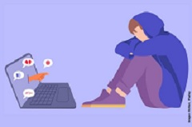
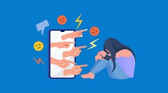

El ciberacoso es una forma de violencia que ocurre a través de internet y las tecnologías digitales. Consiste en molestar, amenazar, insultar, humillar o difundir información falsa sobre una persona mediante redes sociales, aplicaciones de mensajería, videojuegos en línea o cualquier otro medio digital. Este problema afecta principalmente a niños, adolescentes y jóvenes, aunque puede presentarse a cualquier edad.
Cuidados básicos para el Rosal
Para mantener este tipo de planta saludable, vigorosa y con floraciones constantes, se deben seguir estas pautas esenciales de jardinería:Luz solar: Requiere un mínimo de 6 horas de sol directo al día para florecer adecuadamente.Riego: Debe ser profundo pero espaciado. Es vital regar directamente a la base y evitar mojar las hojas o capullos para prevenir la aparición de hongos.Suelo y drenaje: Prefiere suelos fértiles, ricos en materia orgánica y con un excelente drenaje que evite el encharcamiento de las raíces.Poda: Se realiza principalmente a finales del invierno para eliminar ramas muertas o enfermas, y durante la época de floración se deben retirar las rosas marchitas para estimular nuevos brotes.

Las consecuencias pueden ser muy graves para las víctimas. Muchas personas experimentan ansiedad, estrés, miedo, tristeza y baja autoestima. En algunos casos, el ciberacoso puede provocar depresión, aislamiento social y disminución del rendimiento escolar o laboral.Debido a que los mensajes e imágenes pueden difundirse rápidamente por internet, el daño emocional suele ser más intenso y duradero. Las víctimas pueden sentirse inseguras incluso dentro de su propio hogar, ya que el acoso puede ocurrir a cualquier hora del día.